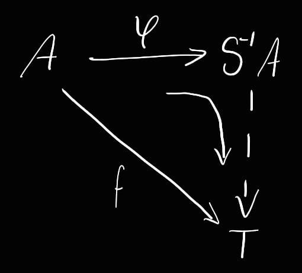

Localización
Definición conjunto multiplicativo
Decimos que es multiplicativo si es cerrado bajo e producto
Definición de equivalencia entre dos fracciones
Decimos que dos fracciones son equivalentes si
Definición del anillo cociente
Para anillo conmutativo y multiplicativo, definimos , con la relación de equivalencia entre dos fracciones.
Además, bajo las operaciones usuales de suma y producto para fracciones, es un anillo.
¿Qué tipo de anillo es ?
Conmutativo con identidad
Condiciones para que el anillo consciente sea dominio entero o campo
Dominio entero si
no admite divisores de cero
Campo si
el anillo de cocientes es dominio entero y el conjunto multiplicativo es todo el anillo, sin el cero.
¿Como se le llama a dicho campo?
Campo completo de fracciones
Definición de campo de cocientes
Si A es dominio entero, entonces su campo completo de fracciones es llamado campo de cocientes y se denota
Propiedades de la función canónica entre un anillo y su anillo de cocientes
A anillo conmutativo
Entonces…
es (con respecto a homomorfismos)…
Un homomorfismo
es unidad en el anillo de cocientes
Si no admite divisores de cero entonces es…
Un monomorfismo
Si es dominio entero…
está completamente encajado en su anillo de cocientes
Si tiene identidad y , entonces…
es un isomorfismo
Propiedad universal
La pareja satisface la propiedad universal:
Para cada pareja donde es un anillo conmutativo con identidad y
homomorfismo tal que es unidad en , .
Entonces existe un único homomorfismo
, tal que
, con
 ¿Qué pasa si la pareja satisface la propiedad universal?
{kind=link}
Definición de ideal de extensión
, ideal
Propiedades del ideal de extensión
- es ideal de
-
Correspondencias de los ideales entre el cociente y el anillo
Forma de los ideales en el anillo original
Si es ideal de , entonces es un ideal de tal que
Además, si …
Forma de los ideales primos en el cociente
Si es primo en , tal que , es ideal primo del cociente,
con
Condiciones para que el ideal de extensión no sea todo el cociente
anillo conmutativo, ideal de
Teorema de correspondencia con el cociente
anillo conmutativo con identidad
Sea ideal primo de con y
ideal primo de
Entonces existe una función biyectiva sombre ambos que a cada lo manda a su ideal de extensión.
Definición anillo localizado de en
es conmutativo con identidad, primo y
El anillo es el anillo localizado de en
y se denota
Teorema de correspondencia entre un anillo y su localizado
anillo conmutativo con identidad, primo
es ideal primo de tal que
es ideal primo de
Entonces la correspondencia define una biyección entre ambos conjuntos
Ideal máximal del anillo localizado
tiene un único ideal máximal, a saber
Definición anillo local
Un anillo conmutativo con identidad se dice local si tiene un único ideal máximal
Forma del ideal máximal de un anillo local
es anillo local es su único ideal maximal
Anillo de enteros
Definición de libre de cuadrado
Un número entero diferente de $0$ y $1$, se dice libre de cuadrados si
-
-
Definición del anillo
Sea libre de cuadrado, entonces
Propiedades del anillo
Igualdad de elementos del anillo
si , y tales que
; entonces
Carácter del anillo
Es dominio entero
Conjugado de un elemento
Sea $\alpha=a+b\sqrt n$, entonces su conjugado es
$\overline \alpha=a-b\sqrt n$
El anillo de cocientes de
Norma
o
dada por
Además,
;
Unidades del anillo
¿Cuál es el dominio de los enteros gaussianos?